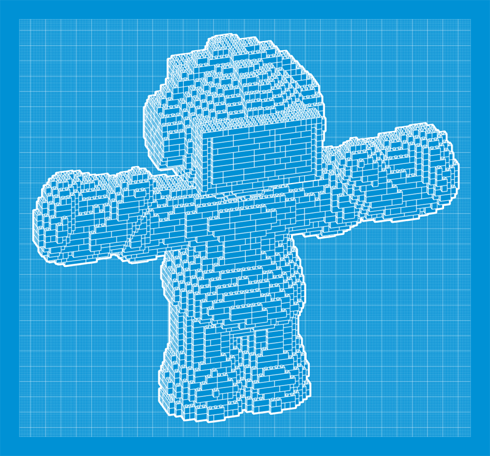

Your browser doesn't support the features required by impress.js, so you are presented with a simplified version of this presentation.
For the best experience please use the latest Chrome, Safari or Firefox browser.
Managing Drupal Configuration Like a Boss
Thomas Lattimore & Mark Shropshire
So what do we mean by configuration?
Storytime…
- You build an awesome site for UnicornEngine.com. This includes some beautifully architected Content Types, polished Views, image style presets, and a lot more that is all glued together by your site building magic.
- The site launches as a huge success and all stakeholders are amazed by your mad skills.
But, then they want changes made (of course)
And these changes have to be duplicated across the test, staging, demo, and live site for UnicornEngine.
So this means I have to point & click across all these sites to make the changes?
Features module allows you to export your site configuration into code that can be deployed to different environments.
An analogy...

If your Views, content types, taxonomy, and other configuration are "Lego". Features is like storing a blueprint for that configuration in code.
Features history lesson:
- Module name derived from its 1st intent: export "features" for a site. ex: Blog, Photo gallery, Store, etc.
- Geared towards distributions originally.
- As a side affect it could be used to manage general site configuration.
Features can export:
- Content types & Fields
- Permissions & Roles
- Menus
- {variable} table (with strongarm module)
- This includes site name, slogan, pathauto settings, default theme, and a lot more.
Have a need to export something not listed here? There's an API to define your own exportable types.
Need more power? We've got modules
Drush integration? Yep, got you covered
drush fu {name_of_feature}
- update's features with latest configuration in the database
drush fr {name_of_feature}
- reverts any configuration in the database that doesn't match what's in a Feature
- See even more examples like creating or editing a Feature from drush in a High Rock Media blog.
Enough talking - please show me stuff
Moving forward...
- Drupal 8 (when it's released) will ship with a configuration management system, built in!
- Features will go back to it's "original" purpose - packaging up "features". Rather than being used also as a universal means of configuration storage
- There is no {variable} table. All configuration is stored in .yml configuration files.
Can I see?
And now, here's shrop!